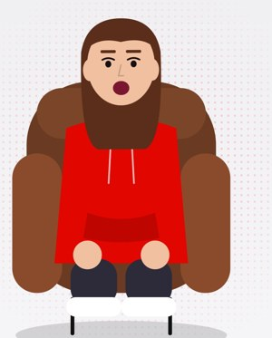
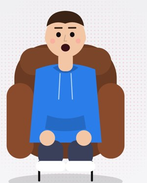
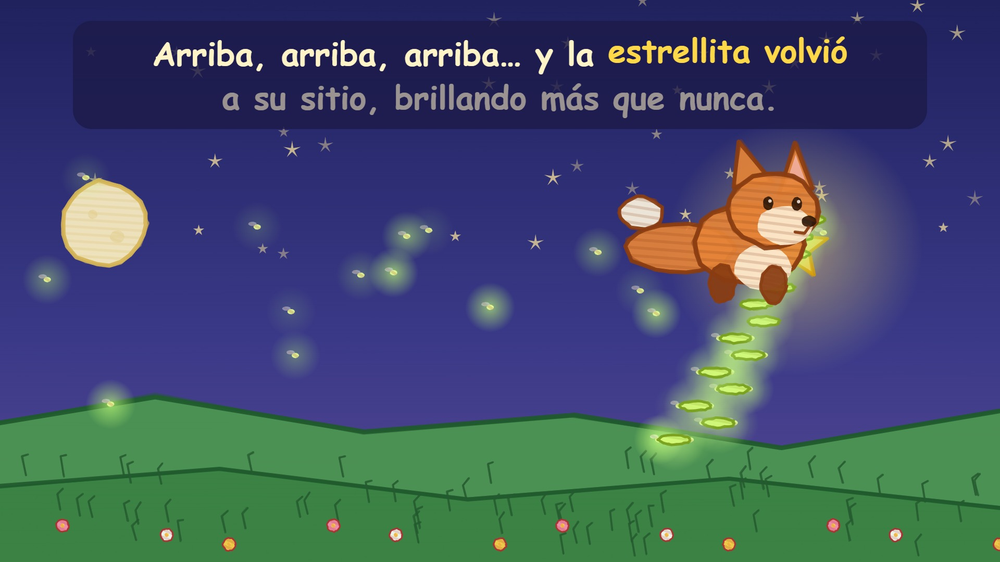
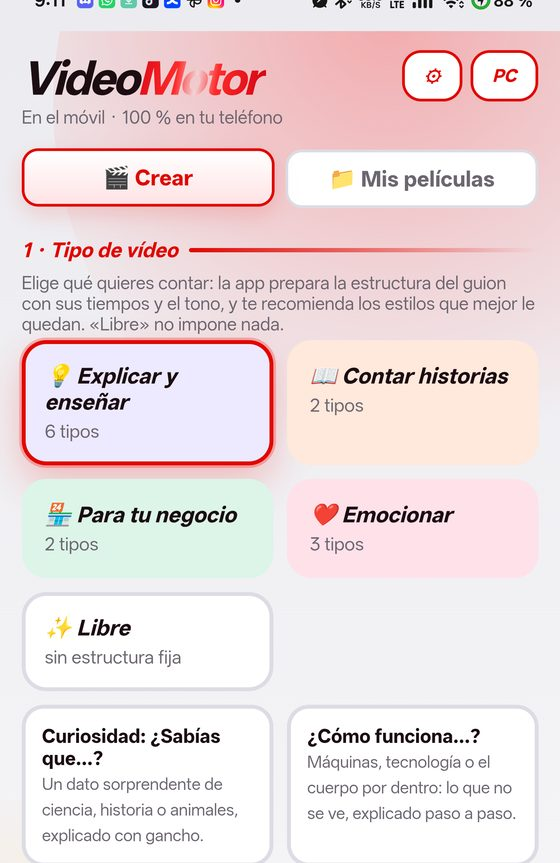

Presentador animado, 120 estilos que se mezclan, voz y música. Todo dibujado con código, en tu PC o dentro de tu móvil. Tu IA escribe; VideoMotor dibuja.
100 % offline para crear · sin suscripciones a la nube
Esto sale de un guion
Vídeos reales, sin cámara ni editor: motion graphics dibujados por código, con voz y música.
Del guion al vídeo, en directo
Escribes (o tu IA escribe) y cada línea se convierte en una escena: colores, fondo y gráficos salen del propio guion. Mira cómo se arma.
Eliges qué contar. Él hace el resto.
Estructura, voz, subtítulos, música y exportación, sin tocar un editor.
Elige el tipo
Curiosidad, tutorial, top, cuento, terror… 59 tipos, cada uno con su estructura y su tono.
Consigue el guion
Escríbelo tú o pídeselo a ChatGPT, Gemini o Grok con un toque: la app abre la IA con el prompt listo.
Pulsa generar
Voz, subtítulos palabra a palabra, música y efectos. Sale un MP4 vertical u horizontal.
Películas en código
La IA escribe la página, VideoMotor la dibuja fotograma a fotograma, con voz.
Tu propia voz
«Mi voz» clona tu voz a partir de una muestra, sin enviar nada a internet.
35 s a 10 min
1080×1920 o 1920×1080, con las zonas seguras de TikTok y Reels respetadas.
Privado
Todo ocurre en tu equipo. La única conexión es la IA que tú elijas.
Crimson Gloss
Una palabra gigante en rojo cristal 3D que se escribe al ritmo de la voz, un muñeco que habla con sincronía labial, tarjetas por cinta roja y fondos que cambian según el guion. Por código, offline.
12 personajes a elegir (o «Automático»)
 Presentador
Presentador
Presentadora
Niño Robot
Robot Zorro
Zorro36 escenas de B-roll que se eligen solas
Una cifra se cuenta hasta su valor, «crece» dibuja un gráfico, los pasos se ordenan, un enlace abre un navegador…
Un estilo para cada historia
99 estilos de Lemo-Opuscar (óleo, acuarela, ukiyo-e, crayón, recortables…), 13 de mezcla (papel, pizarra, cómic, noticiero, terminal, synthwave, VHS, tipografía cinética, «Editorial en movimiento»…) y 8 de skills de vídeo-en-código. Se pueden mezclar frase a frase y crear los tuyos con tu IA.

Tus propios estilos
Describes cómo se ve; tu IA escribe el código del estilo, la app lo prueba en directo y lo suma a tu mezcla. Nada es fijo: el arte lo dibuja tu IA.
Cada escena es Canvas determinista: el mismo guion da siempre el mismo vídeo.
Un estudio dentro del móvil
La misma pantalla funciona en el teléfono y en el PC. En el móvil renderiza sin encender el PC (H.264 + AAC con el hardware del teléfono; un vídeo de 90 s en unos 53 s). En el PC suma la voz Kokoro offline.

Render local
Sin nube y sin PC.
Mezcla
13 estilos que se combinan frase a frase.
59 tipos
Historia o pasos, con mezcla sugerida.
Listo para publicar
Descripción y hashtags para copiar.
Tu IA escribe y dibuja
VideoMotor no trae el arte fijo: se lo pides a la IA que ya usas. Un toque abre la app con el prompt listo, envías, copias la respuesta y vuelves: se pega sola.
💬 ChatGPT, Gemini o Grok
En el móvil cada botón aparece solo si tienes esa app. En el PC se abre su web.
🎨 Todo por código
Paleta, fondo, una ilustración por frase y las escenas, según lo que dice el guion.
✅ La app lo comprueba
Si falta una pieza te lo dice; si el código falla, te muestra el error para pegárselo a la IA.
Motor
Elige tu dispositivo
Instálalo y ábrelo para verlo todo. Para crear vídeos necesitas tu clave de licencia.
🖥️ Windows
Windows 10 u 11 · se instala solo (Python, ffmpeg y modelos).
Pedir el instaladorVideoMotor-Setup.exe
- 8 GB de RAM y 12 GB libres
- Si SmartScreen avisa: «Más información → Ejecutar de todas formas»
📱 Android
Android 10 o superior · APK de 2,4 MB.
Descargar APKVideoMotor.apk · 2,4 MB
- Al abrirlo permite «instalar apps de esta fuente»
- Crea y renderiza en el propio teléfono
- No está en Google Play
Descarga
VideoMotor-Setup.exe y ábrelo.
Déjalo instalar
Analiza tu PC y descarga Python, ffmpeg, PyTorch (CUDA o CPU) y los modelos.
Abre VideoMotor
Elige PC o móvil en la pantalla de inicio, escoge tipo y estilo, pega el guion y genera.
Perfiles según tu PC
| Perfil | Hardware | Imágenes por IA |
|---|---|---|
| alto | NVIDIA con ≥ 10 GB de VRAM | Juggernaut XL |
| medio | NVIDIA 6–10 GB | Juggernaut con parte del modelo en RAM |
| cpu | Sin NVIDIA | SD-Turbo (lento); Crimson y los vídeos en código no lo necesitan |
Mínimo: Windows 10/11, 8 GB de RAM, 12 GB libres e internet durante la instalación (6–12 GB).
Descarga el APK
VideoMotor.apk y permite instalar desde esa fuente.
Elige «En este móvil»
La pantalla de inicio te deja escoger entre crear en el teléfono o conectar con tu PC.
Conecta tu IA
Instala ChatGPT, Gemini o Grok y aparecen sus botones; no hace falta ninguna clave.
Android 10 o superior.
git clone https://github.com/Macc961112/VideoMotor cd VideoMotor python -m venv venv venv\Scripts\pip install -r requirements.txt venv\Scripts\python app.py # ventana de escritorio venv\Scripts\python web.py # solo el servidor web (puerto 5000)
El repositorio es privado: pide acceso por Instagram.
Una clave, tu equipo
VideoMotor es de pago. Puedes instalarlo y verlo todo, pero para crear vídeos necesitas una clave. Se activa sin internet y queda atada a tu equipo.
Copia tu código
En la app, botón 🔑 Licencia (PC) o Ajustes → Licencia (móvil).
Pide tu clave
Envía ese código por Instagram y recibirás una clave que empieza por VM1-.
Actívala
Pégala y pulsa Activar. Un PC, un móvil, o los que acordéis.
Solicita tu licencia
Escríbeme por Instagram con tu código de equipo y tu nombre, y te respondo con tu clave. Si necesitas el instalador de Windows, pídemelo en el mismo mensaje.
Escribir a @macc_dota2Dudas y límites
¿Qué necesita internet?
Solo la instalación inicial y tu IA de guiones (ChatGPT, Gemini o Grok), porque ellas escriben el guion y los dibujos. Crimson y los estilos de animación descargan unos 200 MB la primera vez (Remotion/Node).
¿Se puede renderizar cualquier estilo en el móvil?
Los que dibujan con canvas y Crimson, sí. Los estilos que necesitan imágenes generadas con IA, o páginas sin canvas, se hacen en el PC.
¿Las cifras de las escenas son fiables?
Salen de lo que se entiende de la voz y pueden equivocarse: revísalas antes de publicar.
¿El muñeco es una persona real?
No, es un dibujo vectorial. No edita tu vídeo grabado.
¿Está firmado el instalador? ¿Está en Google Play?
No a ambas: el instalador de Windows no está firmado (SmartScreen avisará) y la app de Android se instala desde el APK.
Tu próximo vídeo,
en un par de minutos
Licencia de pago por equipo, que se activa sin internet. Sin clave puedes ver toda la app.
⬇ Descargar VideoMotor 1.4